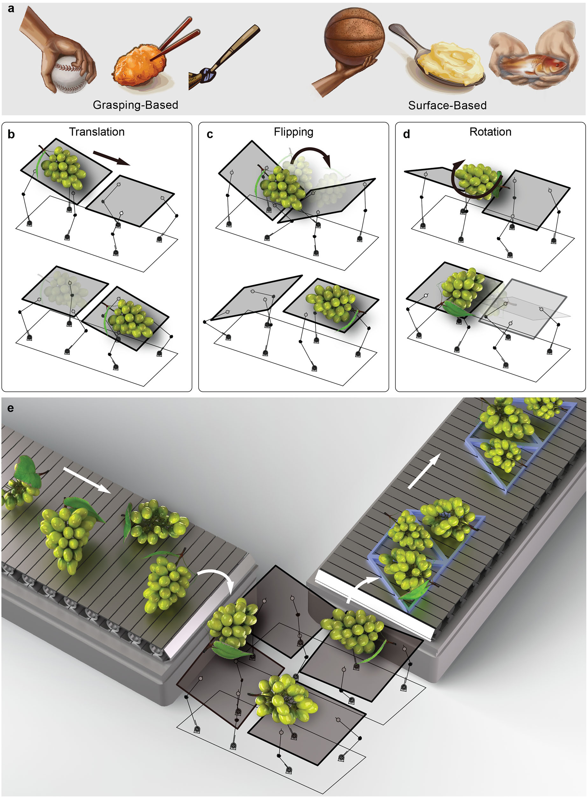
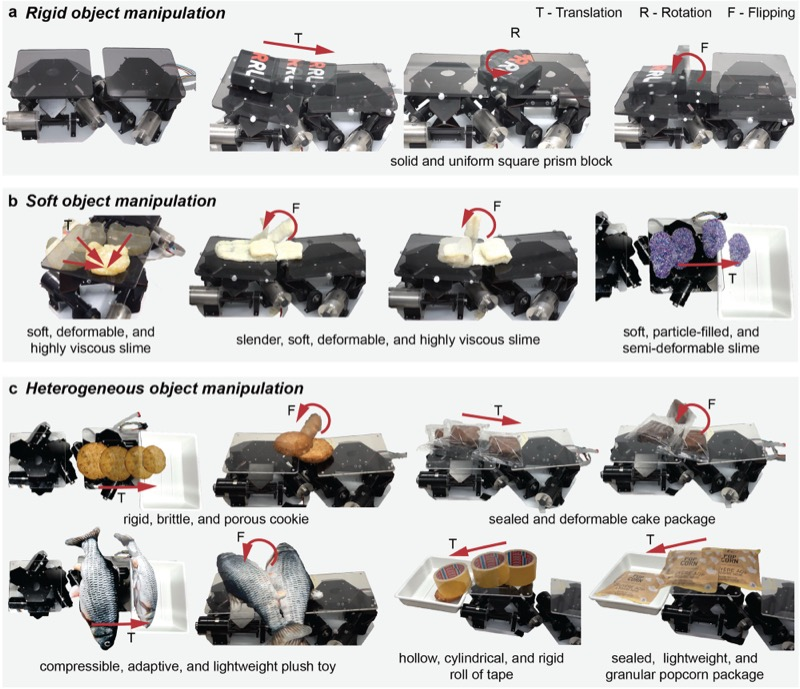
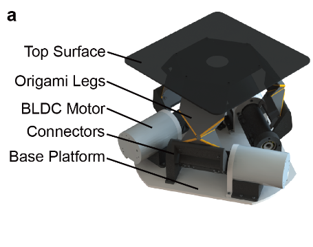
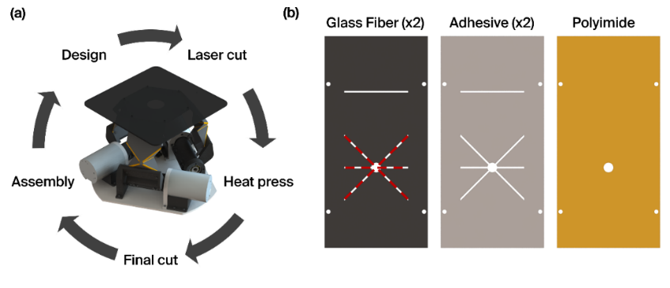
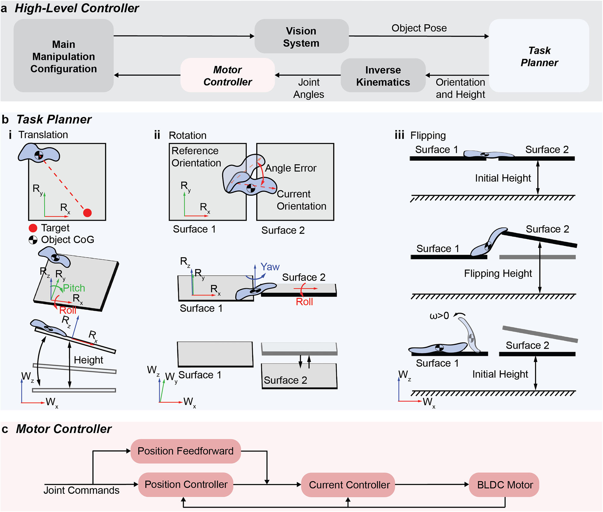
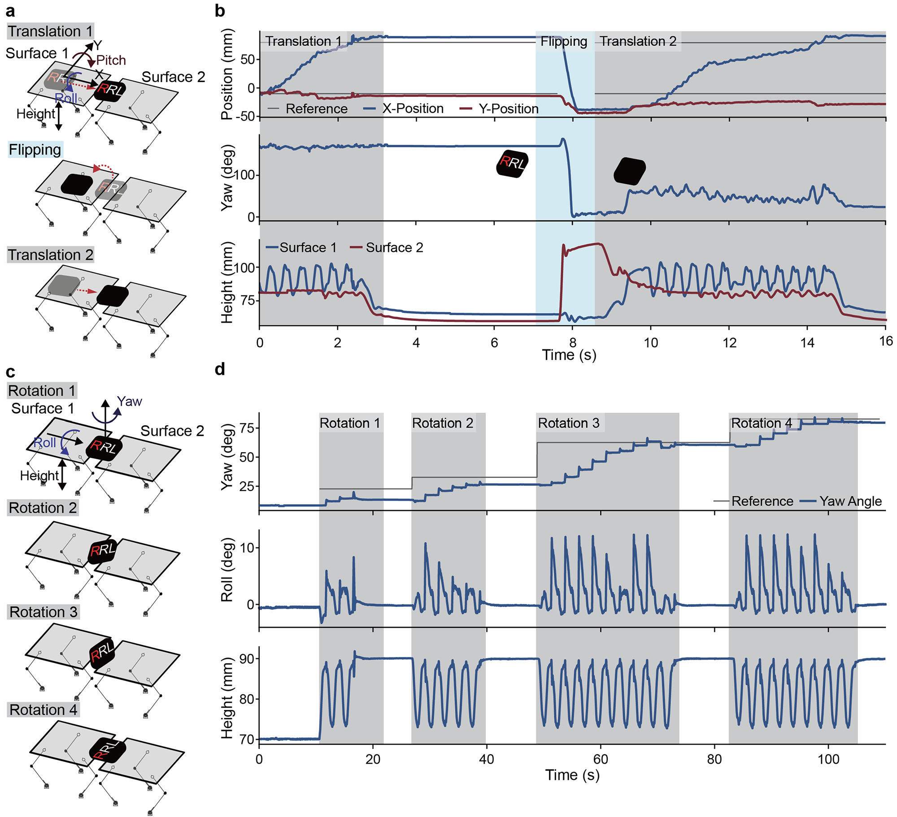

Featured Research
Intelligence lies not only in the brain but in the body. We present surface-based manipulation strategies that diverge from classical grasping approaches, using flat surfaces as minimalist end-effectors. By adjusting surfaces' position and orientation, objects can be translated, rotated, and flipped using closed-loop control — adapting to objects of various shapes, sizes, and stiffness levels.
Ziqiao Wang*, Serhat Demirtas*, Fabio Zuliani, Jamie Paik
npj Robotics, vol. 4, no. 1, 2026 —
Read paper on npj Robotics






Published in npj Robotics, 2026 · EPFL Reconfigurable Robotics Lab